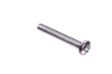

M3 x 20 mm Metal Screw - M320

Summary
Name: M3 x 20 mm Metal Screw
ID: SCRE-M3-M-20-01
Hex ID: M320
WebPage: https://github.com/oomlout/oomlout-OOMP/wiki/SCRE-M3-M-20-01
Short URL: http://oom.lt/M320
Revision History: https://github.com/oomlout/oomlout-OOMP/blob/master/parts/SCRE-M3-M-20-01/
| Type |
Size |
Color |
Description |
Index |
SCRE
Screw |
M3
M3 |
M
Metal |
20
x 20 mm |
01
|
Images

About
This part is awaiting a description.
Specifications
| Info |
Value |
| Type |
Screw |
| Size |
M3 |
| Color |
Metal |
| Description |
x 20 mm |
Extra Details
Page last updated: 2016-04-03 01:22
Spotted a mistake, want to add more? Let us know oomp@oomlout.com
All images and resources are licensed [CC BY-SA] unless otherwise stated (ie. the datasheets)